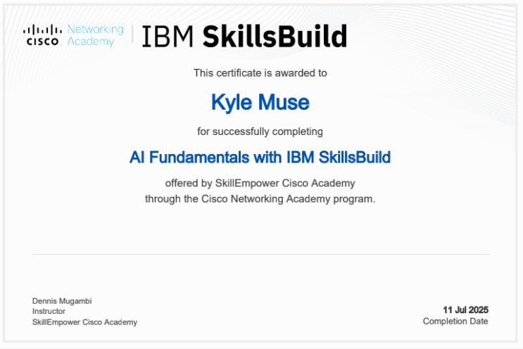

Gained a strong foundation in data analytics, including data cleaning, visualization, and interpretation techniques. Learned how to derive insights from structured data using tools like spreadsheets and data visualization platforms, while applying real-world analytical thinking.
View CredentialKyle
Passionate Web Developer | Creative Problem Solver | Tech Enthusiast
About Me
I'm a Computer Science student at Mount Kenya University with a
passion for web development. My journey in tech is driven by a
deep interest in full-stack development, allowing me to build
comprehensive and dynamic digital experiences from the ground up.
I turn ideas into functional, user-friendly websites. I am
constantly honing my skills across both front-end and back-end
technologies. Beyond coding, I'm a tech enthusiast, always keeping
tabs on the latest computer science trends and innovations. This
continuous learning fuels my approach to development, ensuring my
work is not only current but also forward-thinking.
Skills
Certifications
Data Analytics
Python Essentials
Developed a solid understanding of Python programming, covering variables, data structures, control flow, functions, and basic file handling. Focused on writing efficient, readable code and applying it to simple problem-solving scenarios.
View Credential

AI Fundamentals
Explored core concepts of artificial intelligence, including machine learning, neural networks, and natural language processing. Acquired a beginner-friendly understanding of how AI is transforming industries, alongside ethical considerations and practical use cases.
View CredentialInterests
Frontend Development
I'm a Front-End Developer driven by the challenge of crafting elegant and effective web solutions. I develop seamless user interfaces that are both aesthetically pleasing and incredibly functional. I take pride in delivering responsive websites that offer a flawless experience across desktops, tablets, and mobile devices, ensuring your brand always shines.
Backend Development
I'm a Backend Developer passionate about crafting high-performance and secure solutions using Node.js. I specialize in building robust and scalable server-side applications with Node.js. With my knoledge in APIs, I ensure seamless data exchange and functionality between applications.
Software Engineering
I'm a Software Engineer in the making, with a strong passion for building reliable and efficient applications using Java. I enjoy learning how complex systems work and translating that knowledge into clean, maintainable code. As I grow in this field, I'm focused on mastering core software engineering principles, object-oriented programming, and backend development using Java-based technologies.
Projects
üé®
E-Commerce Platform
A full-stack e-commerce solution built with React and Node.js, featuring user authentication, payment processing, and admin dashboard.
View Projectüì±
Task Management App
A responsive web application for team collaboration with real-time updates, drag-and-drop functionality, and progress tracking.
View Projectüåê
Weather Dashboard
An interactive weather application using APIs to display current conditions, forecasts, and location-based weather data with beautiful visualizations.
View ProjectüéÆ
Memory Game
A fun browser-based memory game with score tracking, multiple difficulty levels, and smooth animations built with vanilla JavaScript.
View Project